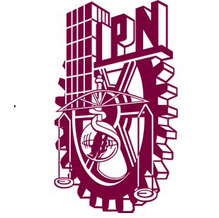

Master degree in Genomic Biotechnology
2023-2025
- First Place, Best Software Award 2024 – Instituto Politécnico Nacional (IPN).
- Second place in scientific posters at the Symposium Current Trends in Drug Discovery and Development (UNAM 2025), presenting Machine Learning models to predict inhibitory compounds related to Alzheimer’s and Type 2 Diabetes (DM2).
- Developed 60 Machine Learning & Deep Learning models (Multilayer Perceptrons, Random Forest, SVM, XGBoost, and Logistic Regression) to predict the activity of molecules against EGFR, MAPK1, SRC, and STAT3, identifying 4 compounds capable of inhibiting 3 of these proteins, which are associated with the Alzheimer–DM2 relationship.
- Certifications:
- IBM Data Science.
- AWS – Getting Started with Compute (EC2), Databases (RDS), Storage (S3).
- Basic Proficiency in KNIME Analytics Platform.
- Data Analytics with Python (FCC).